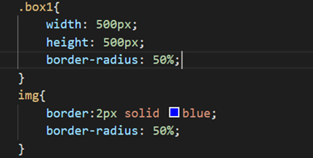
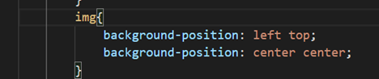

字符框的高度，可继承，默认值medium，16px。基准字号：浏览器设置的默认字体大小，通常为16px，可更改。
|
预设值 |
|
|
medium |
中等字号 |
|
large |
大字体 |
|
Smaller |
小字号 |
|
数值 |
|
|
px【常用】 |
绝对字体大小 |
|
em【常用】 |
相对于父元素的字体大小，若没有父元素，则使用基准字号 |
|
% |
原理同em，例如200%，相当于2em，50%，相当于.5em |
|
rem |
相对于基准字号 |
将【font-weight】设置为【bold】，以加粗文字，该属性可继承，数值从100到900取整。
将【font-style】设置为【italic】，以倾斜文字，该属性可继承。
设置【letter-spacing】的值为px或em，可控制文字间的间隙，该属性可继承。
可实现第一个文字向后缩进。
设置【text-decoration】属性，可以给文字划线。取值为underline，line-through，overline。
【::first-letter】可选中元素中的第一个文字
【::first-line】可选中元素中的第一行文字。
【::selection】可选中被用户框选的文字。
概念：衬线字体和非衬线字体，修改字体类型【font-family】，使用【@font-face指令】加载web字体，使用图标字体。
圆角边框【border-radius】，普通的圆角边框，圆形边框，圆形图片。

使用【background-image】设置背景图片。
使用【background-repeat】设置图片重复方式。
|
repeat |
【默认值】从左到右从上到下重复 |
|
no-repeat |
不重复 |
|
repeat-x |
仅在x轴方向上重复 |
|
repeat-y |
仅在y轴方向上重复 |
使用【background-position】设置图片在边框盒中的位置，默认值为左上。
|
预设值 |
left、right、top、bottom、center |
|
数值 |
使用数值可实现从雪碧图（Sprite）中取得部分图像 |
示例：

使用【background-size】设置背景图尺寸。
|
预设值 |
contain，cover |
|
数值 |
200px 200px；100% 100%，100% auto |
使用【background-attachment】固定背景图
|
scroll |
【默认值】背景图跟随元素移动 |
|
fixed |
背景图固定 |
使用速写属性【background】统一设置：background：背景图 位置 / 尺寸 重复方式 固定方式 背景颜色
线性渐变：【background-image：linear-gradient(...)】径向渐变（圆形渐变）：【background-image：radial-gradient(...)】。
透明度【opacity】和alpha通道，鼠标样式。
可调整整个盒子的透明度，Opacity取值为0到1,0表示全透明，1表示完全不透明。使用rgba颜色，可调整某个颜色的透明度，rgba分别表示： r：red，g：green，b：blue，a：alpha，书写格式为：rgba(red, green, blue, alpha)，其中，alpha表示透明通道，取值是0~1之间0表示全透明，1表示完全不透明，也可以用十六进制表示，例如rgba(0,0,0,0.5)可以写成#00000080
文字阴影【text-shadow】，盒子阴影【box-shadow】。
text-shadow: 2px 2px 4px rgba(0,0,0,.5)，
第1个参数：2px，表示阴影的位置向x轴方向（横坐标）的偏移量为2px
第2个参数：2px，表示阴影的位置向y轴方向（横坐标）的偏移量为2px
第3个参数：4px，表示阴影的模糊半径，该数值越大，阴影越模糊
第4个参数：rgba(0,0,0,.5)，表示阴影的颜色
box-shadow: 4px 5px 6px rgba(0,0,0,.5)
box-shadow和text-shadow的用法非常类似
它的4个参数分别表示：x轴的偏移量、y轴的偏移量、模糊半径、阴影颜色
box-shadow: 4px 5px 6px 7px rgba(0,0,0,.5)
多了一个参数，最后一个7px表示阴影的扩散半径，该值越大，阴影越大
box-shadow: 0px 0px 6px 7px rgba(0,0,0,.5)
使用该方式可制作一个以盒子为中心的扩散阴影
box-shadow: inset 0px 0px 10px 5px rgba(0,0,0,.5)
加入inset关键字，可将阴影的扩散方向由向外变为向内。